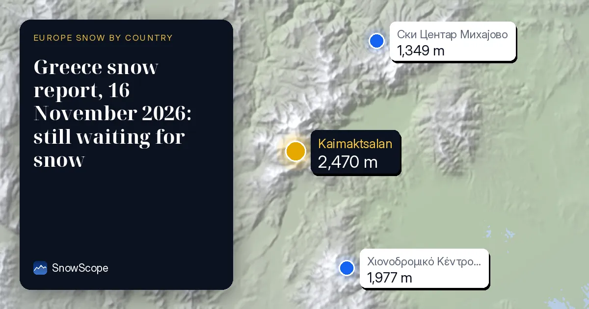
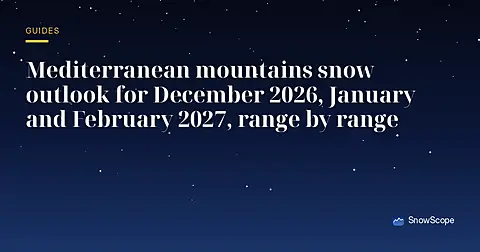
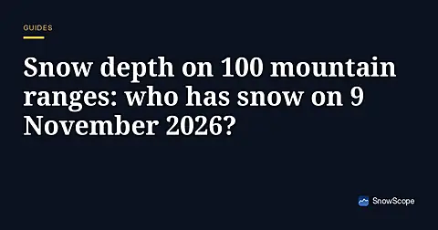

Greece snow report, 16 November 2026: still waiting for snow
Greece's ski resorts remain snowless as of 16 November, with just 10 square kilometres of patchy white across the mapped region. A weather shift arrives next weekend, but early-season snow will be thin and high-altitude only.
See the live snow forecast for Kaimaktsalan in the SnowScope appSnow depth, powder alerts and the 3D map, free.
Where the snow is now
Barely 10 km² of the Greek mountains hold any snow today. The little that remains clings to the highest peaks: Mount Olympus and the Pindus range picked up 3 to 6 centimetres over the past three days, but those flakes fell on bare rock and sparse patches above 2,000 metres. Below that height, the slopes are completely dry.
The snow cover has been shrinking since the start of the week. A week ago, 30 km² was white; yesterday, 20 km² remained. That steady loss points to mild nights and no fresh fall to replace what little autumn snow was left.
| Resort | Snow depth | New snow, 72 h | Coming, next days | Top |
|---|---|---|---|---|
| Kaimaktsalan | 0 cm | 2 cm | 0 cm | 2,470 m |
| Χιονοδρομικό Κέντρο 3-5 Πηγάδια | 0 cm | 0 cm | 0 cm | 1,977 m |
| Εθνικό χιονοδρομικό κέντρο Βασιλ | 0 cm | 0 cm | 0 cm | 2,104 m |

What the resorts show
All 12 ski resorts tracked by SnowScope across Greece report zero snow depth at their operating altitude. Kaimaktsalan, the highest site at 2,470 metres, has collected 2 centimetres in the past 72 hours, but that is base snow, not skiable cover. Χιονοδρομικό Κέντρο 3-5 Πηγάδια and Εθνικό χιονοδρομικό κέντρο Βασιλ are equally bare.
Early November brought no snow to the mid-range lifts either. The 1,500 to 2,000 metre band—where most winter resorts build their terrain—holds almost no white cover and an average depth of zero centimetres. Even at the very top (2,000 to 2,500 metres), only 4 per cent of the area is snow-covered.
The turn comes late this week
A cold front is expected to arrive around Saturday, 21 November. SnowScope forecasts the first measurable snow on that day, with up to 1 centimetre falling across the highest slopes. That is thin and will not reach the base areas of the resorts.
The following week (24 to 30 November) brings better prospects. Up to 4 centimetres is forecast in the second week of late November, spread across several days. That would be real snow, though still not enough to open ski terrain at all 12 sites. The pace of accumulation remains slow for a Greek November.
Wind and altitude matter most
When snow does arrive on 21 November, it will fall first on summits above 2,000 metres and only gradually spread downslope if temperatures stay low. Mount Olympus and the Pindus will see it first. Lower-altitude resorts around 1,500 metres will wait longer for usable depth.
Cold nights will be crucial. If the air warms again by day, any new snow will bond weakly to the existing thin base, creating a slush-and-freeze cycle. Early-season snow is always unstable on bare rock. Skiers and climbers venturing to these heights should check conditions carefully and respect avalanche bulletins for exposed slopes.
What to do now
If you are planning a trip to Greece in the next week, the mountains are not ready. The resorts themselves will announce when they plan to open; do not assume they can operate until they confirm it. Snow on the map does not mean groomed runs or open lifts.
Watch the forecast for 21 November onward. If the cold front delivers as expected, the mountains will slowly turn white from the top down. By late November, real skiing may become possible—but only at the highest resorts, and only on snow that is a week or two old by then.
Tips for skiers
- Do not drive to a resort without checking its website or calling ahead. Snow on the mountain map does not mean the lifts are running.
- If you climb or ski above 2,000 metres when fresh snow arrives, stay alert to avalanche risk. Thin snow on cold rock is unstable. Check the official avalanche bulletin before you go off-piste.
- Early November snow often melts fast in the sun. South-facing slopes will turn to slush by midday; north faces will stay firmer longer.
- Pack layers. The air temperature at 2,000 metres will be well below freezing when snow arrives, but the sun angle in late November is still strong at midday.
- If you plan to visit after 24 November, conditions will be much better, but depth will still be modest. Expect 10–20 cm at the high resorts by month's end if the forecast holds.
About these numbers
Resort snow depths are the deepest snow on the resort's upper slopes on the date shown; they are estimates for an area, not a measurement at one point. Forecasts can change. Always read the official avalanche bulletin before going off-piste.
Cite this report
For research, teaching or the press: the numbers and charts are free to reuse under CC BY 4.0 with this citation.
SnowScope (2026), Greece snow report, 16 November 2026: still waiting for snow, https://snowscope.app/blog/en/2026/11/greece-snow-report-16-november-2026.html, accessed 2026-11-16
SnowScope (Atlas Labs). (2026, November 16). Greece snow report, 16 November 2026: still waiting for snow. SnowScope snow reports. https://snowscope.app/blog/en/2026/11/greece-snow-report-16-november-2026.html
BibTeX
@misc{snowscope2026greecesnowreport16novemb,
author = {{SnowScope (Atlas Labs)}},
title = {Greece snow report, 16 November 2026: still waiting for snow},
year = {2026},
month = nov,
howpublished = {\url{https://snowscope.app/blog/en/2026/11/greece-snow-report-16-november-2026.html}},
note = {Published 2026-11-16 20:42 UTC; accessed 2026-11-16}
}· CC BY 4.0 · Methods, data and tools →
Kaimaktsalan: snow and temperature by height, this winter vs last (tools) →
Follow Kaimaktsalan
Free: a message when fresh snow is coming, and the forecast every morning.
More snow reports

Kosovo snow today, 17 November: snow cover, new snow, snow depth by height, the next days and the best resorts.

A seasonal snow outlook for 18 Mediterranean ranges, from the Atlas to Erciyes, built from the ECMWF and Météo-France seasonal forecasts (51 members each). Every range is 1.1 to 2.7 °C warmer than the 1991-2020 normal, precipitation stays near normal, but snowfall is below normal on 16 of the 18 ranges: High Atlas -48 %, Apennines -28 %, Pyrenees -24 %, Alps near normal.

100 mountain ranges mapped on 9 November 2026: Western Canada leads with 123 cm, the Alps have thin early snow, and 17 ranges are still bare.